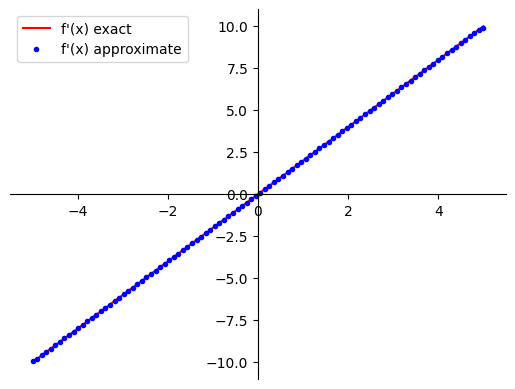
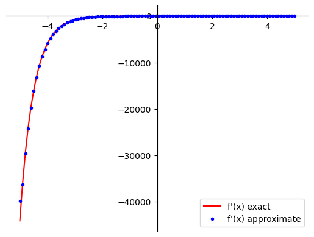
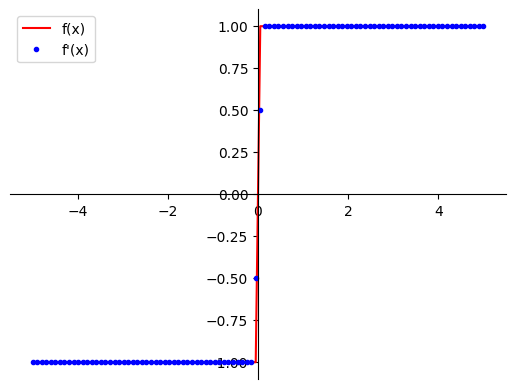
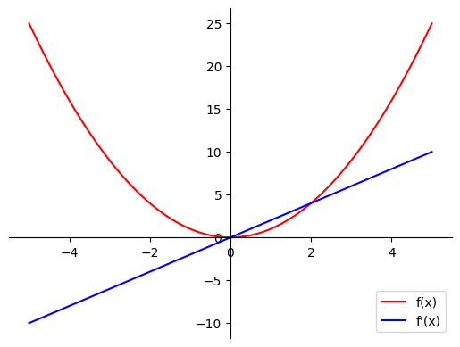
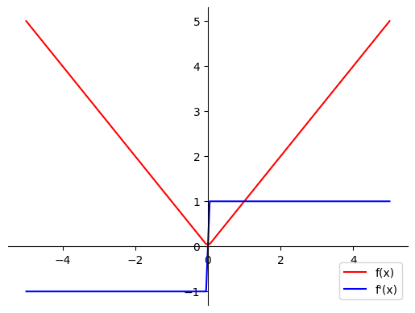

def f(x):
return x**2
print(f(3))9In this notebook, you explore which tools and libraries are available in Python to compute derivatives. You will perform symbolic differentiation with SymPy library, numerical with NumPy and automatic with JAX (based on Autograd). Comparing the speed of calculations, you will investigate the computational efficiency of those three methods. This posts summarized the lecture “Calculus for Machine Learning and Data Science” from Coursera.
This is just a reminder how to define functions in Python. A simple function \(f\left(x\right) = x^2\), it can be set up as:
def f(x):
return x**2
print(f(3))9You can easily find the derivative of this function analytically. You can set it up as a separate function:
def dfdx(x):
return 2*x
print(dfdx(3))6Since you have been working with the NumPy arrays, you can apply the function to each element of an array:
import numpy as np
x_array = np.array([1, 2, 3])
print("x: \n", x_array)
print("f(x) = x**2: \n", f(x_array))
print("f'(x) = 2x: \n", dfdx(x_array))x:
[1 2 3]
f(x) = x**2:
[1 4 9]
f'(x) = 2x:
[2 4 6]Now you can apply those functions f and dfdx to an array of a larger size. The following code will plot function and its derivative (you don’t have to understand the details of the plot_f1_and_f2 function at this stage):
import matplotlib.pyplot as plt
# Output of plotting commands is displayed inline within the Jupyter notebook.
%matplotlib inline
def plot_f1_and_f2(f1, f2=None, x_min=-5, x_max=5, label1="f(x)", label2="f'(x)"):
x = np.linspace(x_min, x_max,100)
# Setting the axes at the centre.
fig = plt.figure()
ax = fig.add_subplot(1, 1, 1)
ax.spines['left'].set_position('center')
ax.spines['bottom'].set_position('zero')
ax.spines['right'].set_color('none')
ax.spines['top'].set_color('none')
ax.xaxis.set_ticks_position('bottom')
ax.yaxis.set_ticks_position('left')
plt.plot(x, f1(x), 'r', label=label1)
if not f2 is None:
# If f2 is an array, it is passed as it is to be plotted as unlinked points.
# If f2 is a function, f2(x) needs to be passed to plot it.
if isinstance(f2, np.ndarray):
plt.plot(x, f2, 'bo', markersize=3, label=label2,)
else:
plt.plot(x, f2(x), 'b', label=label2)
plt.legend()
plt.show()
plot_f1_and_f2(f, dfdx)
In real life the functions are more complicated and it is not possible to calculate the derivatives analytically every time. Let’s explore which tools and libraries are available in Python for the computation of derivatives without manual derivation.
Symbolic computation deals with the computation of mathematical objects that are represented exactly, not approximately (e.g. \(\sqrt{2}\) will be written as it is, not as \(1.41421356237\)). For differentiation it would mean that the output will be somehow similar to if you were computing derivatives by hand using rules (analytically). Thus, symbolic differentiation can produce exact derivatives.
SymPyLet’s explore symbolic differentiation in Python with commonly used SymPy library.
If you want to compute the approximate decimal value of \(\sqrt{18}\), you could normally do it in the following way:
import math
math.sqrt(18)4.242640687119285The output \(4.242640687119285\) is an approximate result. You may recall that \(\sqrt{18} = \sqrt{9 \cdot 2} = 3\sqrt{2}\) and see that it is pretty much impossible to deduct it from the approximate result. But with the symbolic computation systems the roots are not approximated with a decimal number but rather only simplified, so the output is exact:
from sympy import *sqrt(18)\(\displaystyle 3 \sqrt{2}\)
Numerical evaluation of the result is available, and you can set number of the digits to show in the approximated output:
N(sqrt(18), 8)\(\displaystyle 4.2426407\)
In SymPy variables are defined using symbols. In this particular library they need to be predefined (a list of them should be provided). Have a look in the cell below, how the symbolic expression, correspoinding to the mathematical expression \(2x^2 - xy\), is defined:
# List of symbols.
x, y = symbols('x y')
# Definition of the expression.
expr = 2 * x**2 - x * y
expr\(\displaystyle 2 x^{2} - x y\)
Now you can perform various manipulations with this expression: add or subtract some terms, multiply by other expressions etc., just like if you were doing it by hands:
expr_manip = x * (expr + x * y + x**3)
expr_manip\(\displaystyle x \left(x^{3} + 2 x^{2}\right)\)
You can also expand the expression:
expand(expr_manip)\(\displaystyle x^{4} + 2 x^{3}\)
Or factorise it:
factor(expr_manip)\(\displaystyle x^{3} \left(x + 2\right)\)
To substitute particular values for the variables in the expression, you can use the following code:
expr.evalf(subs={x:-1, y:2})\(\displaystyle 4.0\)
This can be used to evaluate a function \(f\left(x\right) = x^2\):
f_symb = x ** 2
f_symb.evalf(subs={x: 3})\(\displaystyle 9.0\)
You might be wondering now, is it possible to evaluate the symbolic functions for each element of the array? At the beginning of the lab you have defined a NumPy array x_array:
print(x_array)[1 2 3]Now try to evaluate function f_symb for each element of the array. You will get an error:
try:
f_symb(x_array)
except TypeError as err:
print(err)'Pow' object is not callableIt is possible to evaluate the symbolic functions for each element of the array, but you need to make a function NumPy-friendly first:
from sympy.utilities.lambdify import lambdify
f_symb_numpy = lambdify(x, f_symb, 'numpy')The following code should work now:
print("x: \n", x_array)
print("f(x) = x**2: \n", f_symb_numpy(x_array))x:
[1 2 3]
f(x) = x**2:
[1 4 9]SymPy has lots of great functions to manipulate expressions and perform various operations from calculus. More information about them can be found in the official documentation here.
SymPyLet’s try to find a derivative of a simple power function using SymPy:
diff(x**3,x)\(\displaystyle 3 x^{2}\)
Some standard functions can be used in the expression, and SymPy will apply required rules (sum, product, chain) to calculate the derivative:
dfdx_composed = diff(exp(-2*x) + 3*sin(3*x), x)
dfdx_composed\(\displaystyle 9 \cos{\left(3 x \right)} - 2 e^{- 2 x}\)
Now calculate the derivative of the function f_symb defined in 2.1 and make it NumPy-friendly:
dfdx_symb = diff(f_symb, x)
dfdx_symb_numpy = lambdify(x, dfdx_symb, 'numpy')Evaluate function dfdx_symb_numpy for each element of the x_array:
print("x: \n", x_array)
print("f'(x) = 2x: \n", dfdx_symb_numpy(x_array))x:
[1 2 3]
f'(x) = 2x:
[2 4 6]You can apply symbolically defined functions to the arrays of larger size. The following code will plot function and its derivative, you can see that it works:
plot_f1_and_f2(f_symb_numpy, dfdx_symb_numpy)Symbolic Differentiation seems to be a great tool. But it also has some limitations. Sometimes the output expressions are too complicated and even not possible to evaluate. For example, find the derivative of the function \[\left|x\right| = \begin{cases} x, \ \text{if}\ x > 0\\ -x, \ \text{if}\ x < 0 \\ 0, \ \text{if}\ x = 0\end{cases}\] Analytically, its derivative is: \[\frac{d}{dx}\left(\left|x\right|\right) = \begin{cases} 1, \ \text{if}\ x > 0\\ -1, \ \text{if}\ x < 0\\\ \text{does not exist}, \ \text{if}\ x = 0\end{cases}\]
Have a look the output from the symbolic differentiation:
dfdx_abs = diff(abs(x),x)
dfdx_abs\(\displaystyle \frac{\left(\operatorname{re}{\left(x\right)} \frac{d}{d x} \operatorname{re}{\left(x\right)} + \operatorname{im}{\left(x\right)} \frac{d}{d x} \operatorname{im}{\left(x\right)}\right) \operatorname{sign}{\left(x \right)}}{x}\)
Looks complicated, but it would not be a problem if it was possible to evaluate. But check, that for \(x=-2\) instead of the derivative value \(-1\) it outputs some unevaluated expression:
dfdx_abs.evalf(subs={x:-2})\(\displaystyle - \left. \frac{d}{d x} \operatorname{re}{\left(x\right)} \right|_{\substack{ x=-2 }}\)
And in the NumPy friendly version it also will give an error:
dfdx_abs_numpy = lambdify(x, dfdx_abs,'numpy')
try:
dfdx_abs_numpy(np.array([1, -2, 0]))
except NameError as err:
print(err)name 'Derivative' is not definedIn fact, there are problems with the evaluation of the symbolic expressions wherever there is a “jump” in the derivative (e.g. function expressions are different for different intervals of \(x\)), like it happens with \(\frac{d}{dx}\left(\left|x\right|\right)\).
Also, you can see in this example, that you can get a very complicated function as an output of symbolic computation. This is called expression swell, which results in unefficiently slow computations. You will see the example of that below after learning other differentiation libraries in Python.
This method does not take into account the function expression. The only important thing is that the function can be evaluated in the nearby points \(x\) and \(x+\Delta x\), where \(\Delta x\) is sufficiently small. Then \(\frac{df}{dx}\approx\frac{f\left(x + \Delta x\right) - f\left(x\right)}{\Delta x}\), which can be called a numerical approximation of the derivative.
Based on that idea there are different approaches for the numerical approximations, which somehow vary in the computation speed and accuracy. However, for all of the methods the results are not accurate - there is a round off error. At this stage there is no need to go into details of various methods, it is enough to investigate one of the numerial differentiation functions, available in NumPy package.
NumPyYou can call function np.gradient to find the derivative of function \(f\left(x\right) = x^2\) defined above. The first argument is an array of function values, the second defines the spacing \(\Delta x\) for the evaluation. Here pass it as an array of \(x\) values, the differences will be calculated automatically. You can find the documentation here.
x_array_2 = np.linspace(-5, 5, 100)
dfdx_numerical = np.gradient(f(x_array_2), x_array_2)
plot_f1_and_f2(dfdx_symb_numpy, dfdx_numerical, label1="f'(x) exact", label2="f'(x) approximate")
Try to do numerical differentiation for more complicated function:
def f_composed(x):
return np.exp(-2*x) + 3*np.sin(3*x)
plot_f1_and_f2(lambdify(x, dfdx_composed, 'numpy'), np.gradient(f_composed(x_array_2), x_array_2),
label1="f'(x) exact", label2="f'(x) approximate")
The results are pretty impressive, keeping in mind that it does not matter at all how the function was calculated - only the final values of it!
Obviously, the first downside of the numerical differentiation is that it is not exact. However, the accuracy of it is normally enough for machine learning applications. At this stage there is no need to evaluate errors of the numerical differentiation.
Another problem is similar to the one which appeared in the symbolic differentiation: it is inaccurate at the points where there are “jumps” of the derivative. Let’s compare the exact derivative of the absolute value function and with numerical approximation:
def dfdx_abs(x):
if x > 0:
return 1
else:
if x < 0:
return -1
else:
return None
plot_f1_and_f2(np.vectorize(dfdx_abs), np.gradient(abs(x_array_2), x_array_2))
You can see that the results near the “jump” are \(0.5\) and \(-0.5\), while they should be \(1\) and \(-1\). These cases can give significant errors in the computations.
But the biggest problem with the numerical differentiation is slow speed. It requires function evalutation every time. In machine learning models there are hundreds of parameters and there are hundreds of derivatives to be calculated, performing full function evaluation every time slows down the computation process. You will see the example of it below.
Automatic differentiation (autodiff) method breaks down the function into common functions (\(sin\), \(cos\), \(log\), power functions, etc.), and constructs the computational graph consisting of the basic functions. Then the chain rule is used to compute the derivative at any node of the graph. It is the most commonly used approach in machine learning applications and neural networks, as the computational graph for the function and its derivatives can be built during the construction of the neural network, saving in future computations.
The main disadvantage of it is implementational difficulty. However, nowadays there are libraries that are convenient to use, such as MyGrad, Autograd and JAX. Autograd and JAX are the most commonly used in the frameworks to build neural networks. JAX brings together Autograd functionality for optimization problems, and XLA (Accelerated Linear Algebra) compiler for parallel computing.
The syntax of Autograd and JAX are slightly different. It would be overwhelming to cover both at this stage. In this notebook you will be performing automatic differentiation using one of them: JAX.
JAXTo begin with, load the required libraries. From jax package you need to load just a couple of functions for now (grad and vmap). Package jax.numpy is a wrapped NumPy, which pretty much replaces NumPy when JAX is used. It can be loaded as np as if it was an original NumPy in most of the cases. However, in this notebook you’ll upload it as jnp to distinguish them for now.
from jax import grad, vmap
import jax.numpy as jnpCreate a new jnp array and check its type.
x_array_jnp = jnp.array([1., 2., 3.])
print("Type of NumPy array:", type(x_array))
print("Type of JAX NumPy array:", type(x_array_jnp))
# Please ignore the warning message if it appears.Type of NumPy array: <class 'numpy.ndarray'>
Type of JAX NumPy array: <class 'jaxlib.xla_extension.Array'>The same array can be created just converting previously defined x_array = np.array([1, 2, 3]), although in some cases JAX does not operate with integers, thus the values need to be converted to floats. You will see an example of it below.
x_array_jnp = jnp.array(x_array.astype('float32'))
print("JAX NumPy array:", x_array_jnp)
print("Type of JAX NumPy array:", type(x_array_jnp))JAX NumPy array: [1. 2. 3.]
Type of JAX NumPy array: <class 'jaxlib.xla_extension.Array'>Note, that jnp array has a specific type jaxlib.xla_extension.Array. In most of the cases the same operators and functions are applicable to them as in the original NumPy, for example:
print(x_array_jnp * 2)
print(x_array_jnp[2])[2. 4. 6.]
3.0But sometimes working with jnp arrays the approach needs to be changed. In the following code, trying to assign a new value to one of the elements, you will get an error:
try:
x_array_jnp[2] = 4.0
except TypeError as err:
print(err)'<class 'jaxlib.xla_extension.Array'>' object does not support item assignment. JAX arrays are immutable. Instead of ``x[idx] = y``, use ``x = x.at[idx].set(y)`` or another .at[] method: https://jax.readthedocs.io/en/latest/_autosummary/jax.numpy.ndarray.at.htmlTo assign a new value to an element in the jnp array you need to apply functions .at[i], stating which element to update, and .set(value) to set a new value. These functions also operate out-of-place, the updated array is returned as a new array and the original array is not modified by the update.
y_array_jnp = x_array_jnp.at[2].set(4.0)
print(y_array_jnp)[1. 2. 4.]Although, some of the JAX functions will work with arrays defined with np and jnp. In the following code you will get the same result in both lines:
print(jnp.log(x_array))
print(jnp.log(x_array_jnp))[0. 0.6931472 1.0986123]
[0. 0.6931472 1.0986123]This is probably confusing - which NumPy to use then? Usually when JAX is used, only jax.numpy gets imported as np, and used instead of the original one.
JAXTime to do automatic differentiation with JAX. The following code will calculate the derivative of the previously defined function \(f\left(x\right) = x^2\) at the point \(x = 3\):
print("Function value at x = 3:", f(3.0))
print("Derivative value at x = 3:",grad(f)(3.0))Function value at x = 3: 9.0
Derivative value at x = 3: 6.0Very easy, right? Keep in mind, please, that this cannot be done using integers. The following code will output an error:
try:
grad(f)(3)
except TypeError as err:
print(err)grad requires real- or complex-valued inputs (input dtype that is a sub-dtype of np.inexact), but got int32. If you want to use Boolean- or integer-valued inputs, use vjp or set allow_int to True.Try to apply the grad function to an array, calculating the derivative for each of its elements:
try:
grad(f)(x_array_jnp)
except TypeError as err:
print(err)Gradient only defined for scalar-output functions. Output had shape: (3,).There is some broadcasting issue there. You don’t need to get into more details of this at this stage, function vmap can be used here to solve the problem.
Note: Broadcasting is covered in the Course 1 of this Specialization “Linear Algebra”. You can also review it in the documentation here.
dfdx_jax_vmap = vmap(grad(f))(x_array_jnp)
print(dfdx_jax_vmap)[2. 4. 6.]Great, now vmap(grad(f)) can be used to calculate the derivative of function f for arrays of larger size and you can plot the output:
plot_f1_and_f2(f, vmap(grad(f)))
In the following code you can comment/uncomment lines to visualize the common derivatives. All of them are found using JAX automatic differentiation. The results look pretty good!
def g(x):
# return x**3
# return 2*x**3 - 3*x**2 + 5
# return 1/x
# return jnp.exp(x)
# return jnp.log(x)
# return jnp.sin(x)
# return jnp.cos(x)
return jnp.abs(x)
# return jnp.abs(x)+jnp.sin(x)*jnp.cos(x)
plot_f1_and_f2(g, vmap(grad(g)))
In previous sections, low computational efficiency of symbolic and numerical differentiation was discussed. Now it is time to compare speed of calculations for each of three approaches. Try to find the derivative of the same simple function \(f\left(x\right) = x^2\) multiple times, evaluating it for an array of a larger size, compare the results and time used:
import timeit, time
x_array_large = np.linspace(-5, 5, 1000000)
tic_symb = time.time()
res_symb = lambdify(x, diff(f(x),x),'numpy')(x_array_large)
toc_symb = time.time()
time_symb = 1000 * (toc_symb - tic_symb) # Time in ms.
tic_numerical = time.time()
res_numerical = np.gradient(f(x_array_large),x_array_large)
toc_numerical = time.time()
time_numerical = 1000 * (toc_numerical - tic_numerical)
tic_jax = time.time()
res_jax = vmap(grad(f))(jnp.array(x_array_large.astype('float32')))
toc_jax = time.time()
time_jax = 1000 * (toc_jax - tic_jax)
print(f"Results\nSymbolic Differentiation:\n{res_symb}\n" +
f"Numerical Differentiation:\n{res_numerical}\n" +
f"Automatic Differentiation:\n{res_jax}")
print(f"\n\nTime\nSymbolic Differentiation:\n{time_symb} ms\n" +
f"Numerical Differentiation:\n{time_numerical} ms\n" +
f"Automatic Differentiation:\n{time_jax} ms")Results
Symbolic Differentiation:
[-10. -9.99998 -9.99996 ... 9.99996 9.99998 10. ]
Numerical Differentiation:
[-9.99999 -9.99998 -9.99996 ... 9.99996 9.99998 9.99999]
Automatic Differentiation:
[-10. -9.99998 -9.99996 ... 9.99996 9.99998 10. ]
Time
Symbolic Differentiation:
3.3597946166992188 ms
Numerical Differentiation:
34.9583625793457 ms
Automatic Differentiation:
153.17511558532715 msThe results are pretty much the same, but the time used is different. Numerical approach is obviously inefficient when differentiation needs to be performed many times, which happens a lot training machine learning models. Symbolic and automatic approach seem to be performing similarly for this simple example. But if the function becomes a little bit more complicated, symbolic computation will experiance significant expression swell and the calculations will slow down.
Note: Sometimes the execution time results may vary slightly, especially for automatic differentiation. You can run the code above a few time to see different outputs. That does not influence the conclusion that numerical differentiation is slower. timeit module can be used more efficiently to evaluate execution time of the codes, but that would unnecessary overcomplicate the codes here.
Try to define some polynomial function, which should not be that hard to differentiate, and compare the computation time for its differentiation symbolically and automatically:
def f_polynomial_simple(x):
return 2*x**3 - 3*x**2 + 5
def f_polynomial(x):
for i in range(3):
x = f_polynomial_simple(x)
return x
tic_polynomial_symb = time.time()
res_polynomial_symb = lambdify(x, diff(f_polynomial(x),x),'numpy')(x_array_large)
toc_polynomial_symb = time.time()
time_polynomial_symb = 1000 * (toc_polynomial_symb - tic_polynomial_symb)
tic_polynomial_jax = time.time()
res_polynomial_jax = vmap(grad(f_polynomial))(jnp.array(x_array_large.astype('float32')))
toc_polynomial_jax = time.time()
time_polynomial_jax = 1000 * (toc_polynomial_jax - tic_polynomial_jax)
print(f"Results\nSymbolic Differentiation:\n{res_polynomial_symb}\n" +
f"Automatic Differentiation:\n{res_polynomial_jax}")
print(f"\n\nTime\nSymbolic Differentiation:\n{time_polynomial_symb} ms\n" +
f"Automatic Differentiation:\n{time_polynomial_jax} ms")Results
Symbolic Differentiation:
[2.88570423e+24 2.88556400e+24 2.88542377e+24 ... 1.86202587e+22
1.86213384e+22 1.86224181e+22]
Automatic Differentiation:
[2.8857043e+24 2.8855642e+24 2.8854241e+24 ... 1.8620253e+22 1.8621349e+22
1.8622416e+22]
Time
Symbolic Differentiation:
911.6637706756592 ms
Automatic Differentiation:
700.4127502441406 msAgain, the results are similar, but automatic differentiation is times faster.
With the increase of function computation graph, the efficiency of automatic differentiation compared to other methods raises, because autodiff method uses chain rule!